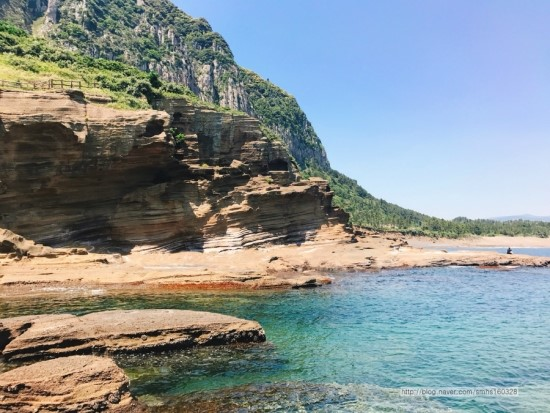
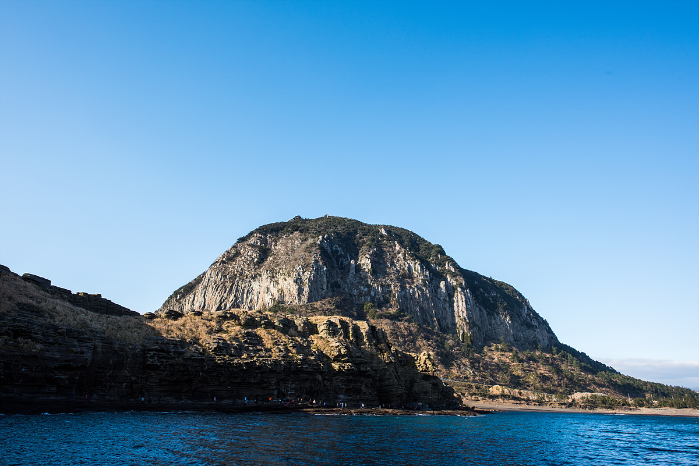

용머리해안
#제주도 #용머리해안#해변 #휴식/힐링 #부모
insta
map
매일 09:00 - 17:00 만조 및 기상악화시 통제
064-760-6321
용머리 해안은 산방산 자락에서 해안가로 뻗어나가는 곳에 위치한다. 마치 바다속으로 들어가는 용의 머리를 닮았다 해서 용머리해안으로 불린다.
수천만년 동안 층층이 쌓인 사암층 암벽이 파도에 깍여 기묘한 절벽을 이루고 있다.
파도의 치여 비밀의 방처럼 움푹 패인 굴방이나 암벽이 간직하고 있는 파도의 흔적은 장황한 역사와 마주할때의 웅장감을 느끼게 한다.
길이 30~50m의 절벽이 굽이치듯 이어지는 장관은 CF와 영화의 배경으로도 촬영된 바 있다.
수천만년 동안 층층이 쌓인 사암층 암벽이 파도에 깍여 기묘한 절벽을 이루고 있다.
파도의 치여 비밀의 방처럼 움푹 패인 굴방이나 암벽이 간직하고 있는 파도의 흔적은 장황한 역사와 마주할때의 웅장감을 느끼게 한다.
길이 30~50m의 절벽이 굽이치듯 이어지는 장관은 CF와 영화의 배경으로도 촬영된 바 있다.
제주특별자치도 서귀포시 안덕면 사계리